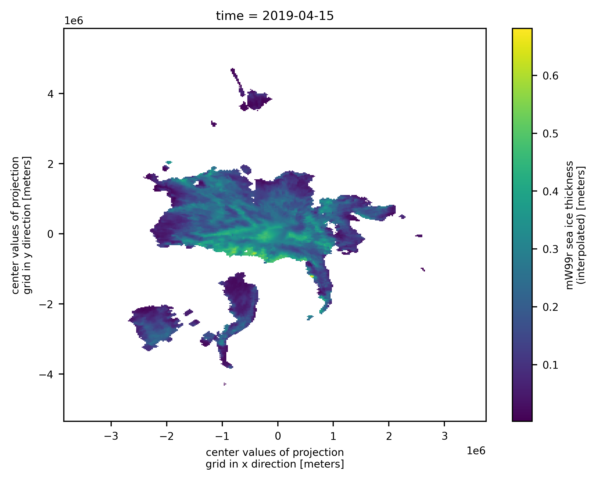
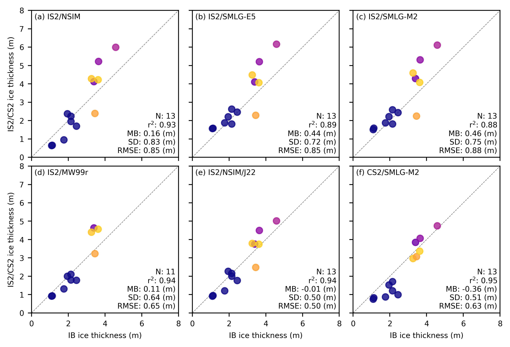

Comparisons with AWI IceBird 2019 airborne data#
Summary: In this notebook, we produce comparisons of April ICESat-2 and CryoSat-2 sea ice thickness data and the input snow loading with snow depth and sea ice thickness data from the AWI IceBird 2019 airborne campaign.
Author: Alek Petty
Version history:
Version 2 (09/25/2025): updated with new MERRA-2 and ERA5 snow loading and some other tweaks.
Version 1 (05/01/2025)
Import notebook dependencies#
import xarray as xr
import pandas as pd
import numpy as np
import itertools
import pyproj
from netCDF4 import Dataset
import scipy.interpolate
from utils.read_data_utils import read_book_data, read_IS2SITMOGR4 # Helper function for reading the data from the bucket
from utils.plotting_utils import compute_gridcell_winter_means, interactiveArcticMaps, interactive_winter_mean_maps, interactive_winter_comparison_lineplot # Plotting
from utils.extra_funcs import apply_interpolation_timestep
from scipy import stats
import datetime
# Plotting dependencies
import cartopy.crs as ccrs
from textwrap import wrap
import hvplot.pandas
import holoviews as hv
import matplotlib.pyplot as plt
from matplotlib.axes import Axes
from cartopy.mpl.geoaxes import GeoAxes
GeoAxes._pcolormesh_patched = Axes.pcolormesh # Helps avoid some weird issues with the polar projection
%config InlineBackend.figure_format = 'retina'
import matplotlib as mpl
# Interpolating/smoothing packages
from scipy.interpolate import griddata
from scipy.spatial import KDTree
from astropy.convolution import convolve
from astropy.convolution import Gaussian2DKernel
mpl.rcParams['figure.dpi'] = 200 # Sets figure size in the notebook
# Remove warnings to improve display
import warnings
warnings.filterwarnings('ignore')
---------------------------------------------------------------------------
ImportError Traceback (most recent call last)
File ~/miniconda3/envs/p39m/lib/python3.9/site-packages/numpy/core/__init__.py:23
22 try:
---> 23 from . import multiarray
24 except ImportError as exc:
File ~/miniconda3/envs/p39m/lib/python3.9/site-packages/numpy/core/multiarray.py:10
9 import functools
---> 10 from . import overrides
11 from . import _multiarray_umath
File ~/miniconda3/envs/p39m/lib/python3.9/site-packages/numpy/core/overrides.py:6
4 import os
----> 6 from numpy.core._multiarray_umath import (
7 add_docstring, implement_array_function, _get_implementing_args)
8 from numpy.compat._inspect import getargspec
ImportError: dlopen(/Users/akpetty/miniconda3/envs/p39m/lib/python3.9/site-packages/numpy/core/_multiarray_umath.cpython-39-darwin.so, 0x0002): Library not loaded: @rpath/libgfortran.5.dylib
Referenced from: <342C6FCD-A261-33D7-B978-626161CFD49B> /Users/akpetty/miniconda3/envs/p39m/lib/libopenblas.0.dylib
Reason: tried: '/Users/akpetty/miniconda3/envs/p39m/lib/libgfortran.5.dylib' (duplicate LC_RPATH '@loader_path'), '/Users/akpetty/miniconda3/envs/p39m/lib/libgfortran.5.dylib' (duplicate LC_RPATH '@loader_path'), '/Users/akpetty/miniconda3/envs/p39m/lib/python3.9/site-packages/numpy/core/../../../../libgfortran.5.dylib' (duplicate LC_RPATH '@loader_path'), '/Users/akpetty/miniconda3/envs/p39m/lib/python3.9/site-packages/numpy/core/../../../../libgfortran.5.dylib' (duplicate LC_RPATH '@loader_path'), '/Users/akpetty/miniconda3/envs/p39m/bin/../lib/libgfortran.5.dylib' (duplicate LC_RPATH '@loader_path'), '/Users/akpetty/miniconda3/envs/p39m/bin/../lib/libgfortran.5.dylib' (duplicate LC_RPATH '@loader_path'), '/usr/local/lib/libgfortran.5.dylib' (no such file), '/usr/lib/libgfortran.5.dylib' (no such file, not in dyld cache)
During handling of the above exception, another exception occurred:
ImportError Traceback (most recent call last)
Cell In[1], line 1
----> 1 import xarray as xr
2 import pandas as pd
3 import numpy as np
File ~/miniconda3/envs/p39m/lib/python3.9/site-packages/xarray/__init__.py:3
1 from importlib.metadata import version as _version
----> 3 from xarray import testing, tutorial
4 from xarray.backends.api import (
5 load_dataarray,
6 load_dataset,
(...)
10 save_mfdataset,
11 )
12 from xarray.backends.zarr import open_zarr
File ~/miniconda3/envs/p39m/lib/python3.9/site-packages/xarray/testing.py:7
4 from collections.abc import Hashable
5 from typing import Union
----> 7 import numpy as np
8 import pandas as pd
10 from xarray.core import duck_array_ops, formatting, utils
File ~/miniconda3/envs/p39m/lib/python3.9/site-packages/numpy/__init__.py:141
138 # Allow distributors to run custom init code
139 from . import _distributor_init
--> 141 from . import core
142 from .core import *
143 from . import compat
File ~/miniconda3/envs/p39m/lib/python3.9/site-packages/numpy/core/__init__.py:49
25 import sys
26 msg = """
27
28 IMPORTANT: PLEASE READ THIS FOR ADVICE ON HOW TO SOLVE THIS ISSUE!
(...)
47 """ % (sys.version_info[0], sys.version_info[1], sys.executable,
48 __version__, exc)
---> 49 raise ImportError(msg)
50 finally:
51 for envkey in env_added:
ImportError:
IMPORTANT: PLEASE READ THIS FOR ADVICE ON HOW TO SOLVE THIS ISSUE!
Importing the numpy C-extensions failed. This error can happen for
many reasons, often due to issues with your setup or how NumPy was
installed.
We have compiled some common reasons and troubleshooting tips at:
https://numpy.org/devdocs/user/troubleshooting-importerror.html
Please note and check the following:
* The Python version is: Python3.9 from "/Users/akpetty/miniconda3/envs/p39m/bin/python"
* The NumPy version is: "1.24.4"
and make sure that they are the versions you expect.
Please carefully study the documentation linked above for further help.
Original error was: dlopen(/Users/akpetty/miniconda3/envs/p39m/lib/python3.9/site-packages/numpy/core/_multiarray_umath.cpython-39-darwin.so, 0x0002): Library not loaded: @rpath/libgfortran.5.dylib
Referenced from: <342C6FCD-A261-33D7-B978-626161CFD49B> /Users/akpetty/miniconda3/envs/p39m/lib/libopenblas.0.dylib
Reason: tried: '/Users/akpetty/miniconda3/envs/p39m/lib/libgfortran.5.dylib' (duplicate LC_RPATH '@loader_path'), '/Users/akpetty/miniconda3/envs/p39m/lib/libgfortran.5.dylib' (duplicate LC_RPATH '@loader_path'), '/Users/akpetty/miniconda3/envs/p39m/lib/python3.9/site-packages/numpy/core/../../../../libgfortran.5.dylib' (duplicate LC_RPATH '@loader_path'), '/Users/akpetty/miniconda3/envs/p39m/lib/python3.9/site-packages/numpy/core/../../../../libgfortran.5.dylib' (duplicate LC_RPATH '@loader_path'), '/Users/akpetty/miniconda3/envs/p39m/bin/../lib/libgfortran.5.dylib' (duplicate LC_RPATH '@loader_path'), '/Users/akpetty/miniconda3/envs/p39m/bin/../lib/libgfortran.5.dylib' (duplicate LC_RPATH '@loader_path'), '/usr/local/lib/libgfortran.5.dylib' (no such file), '/usr/lib/libgfortran.5.dylib' (no such file, not in dyld cache)
mpl.rcParams.update({
"font.size": 7, # Match typical LaTeX 10pt font
"axes.labelsize": 7,
"xtick.labelsize": 7,
"ytick.labelsize": 7,
"legend.fontsize": 7
})
grid_size=100
ib_agg_str='mean'
int_str='_int'
reanalysis = 'e5'
reanalysis_two = 'm2'
# Define the variables to compare
variables_ice = [
'ice_thickness'+int_str,
'ice_thickness_sm_'+reanalysis+int_str,
'ice_thickness_sm_'+reanalysis_two+int_str,
'ice_thickness_mw99r',
'ice_thickness_J22'+int_str,
'ice_thickness_cs2_ubris'
]
# Define the variables to compare
variables_snow = [
'snow_depth'+int_str,
'snow_depth_sm_'+reanalysis+int_str,
'snow_depth_sm_'+reanalysis_two+int_str,
'snow_depth_mw99r',
'cs2is2_snow_depth'
]
variables_all = variables_ice+variables_snow
# Load the all-season wrangled dataset
IS2SITMOGR4_v3 = xr.open_dataset('./data/book_data_allseason_v1.nc')
print("Successfully loaded all-season wrangled dataset")
Successfully loaded all-season wrangled dataset
IS2SITMOGR4_v3
<xarray.Dataset>
Dimensions: (time: 33, y: 448, x: 304)
Coordinates:
* time (time) datetime64[ns] 2018-11-15 ... 2021...
* x (x) float32 -3.838e+06 ... 3.738e+06
* y (y) float32 5.838e+06 ... -5.338e+06
longitude (y, x) float32 ...
latitude (y, x) float32 ...
Data variables: (12/53)
crs (time) float64 ...
ice_thickness_sm_e5 (time, y, x) float32 ...
ice_thickness_sm_m2 (time, y, x) float32 ...
ice_thickness_unc (time, y, x) float32 ...
num_segments (time, y, x) float32 ...
mean_day_of_month (time, y, x) float32 ...
... ...
snow_density_w99r_int (time, y, x) float32 ...
ice_density_j22_int (time, y, x) float32 ...
ice_thickness_cs2_ubris (time, y, x) float64 ...
cs2_sea_ice_type_UBRIS (time, y, x) float64 ...
cs2_sea_ice_density_UBRIS (time, y, x) float64 ...
cs2is2_snow_depth (time, y, x) float64 ...
Attributes:
contact: Alek Petty (akpetty@umd.edu)
description: Aggregated IS2SITMOGR4 summer V1 dataset.
history: Created 23/07/25out_proj = 'EPSG:3411'
out_lons = IS2SITMOGR4_v3.longitude.values
out_lats = IS2SITMOGR4_v3.latitude.values
mapProj = pyproj.Proj("+init=" + out_proj)
xptsIS2, yptsIS2 = mapProj(out_lons, out_lats)
# Just select April as that's all we use here
IS2SITMOGR4_v3 = IS2SITMOGR4_v3.sel(time='2019-04-15')
IS2SITMOGR4_v3.ice_thickness_mw99r_int.plot()
<matplotlib.collections.QuadMesh at 0x152c74130>
{kind=link}

# COARSEN TO MATCH 100 KM RESOLUTION OF IB
if grid_size==100:
# First count valid values in each block
valid_counts = IS2SITMOGR4_v3.notnull().coarsen(y=4, x=4, boundary='trim').sum()
# Calculate means
means = IS2SITMOGR4_v3.coarsen(y=4, x=4, boundary='trim').mean()
# Mask means where count is less than minimum
IS2SITMOGR4_v3 = means.where(valid_counts >= 4)
IS2SITMOGR4_v3
<xarray.Dataset>
Dimensions: (y: 112, x: 76)
Coordinates:
time datetime64[ns] 2019-04-15
* x (x) float32 -3.8e+06 -3.7e+06 ... 3.7e+06
* y (y) float32 5.8e+06 5.7e+06 ... -5.3e+06
longitude (y, x) float32 168.2 167.5 ... -10.81 -10.08
latitude (y, x) float32 31.47 31.85 ... 35.27 34.85
Data variables: (12/53)
crs float64 nan
ice_thickness_sm_e5 (y, x) float32 nan nan nan ... nan nan nan
ice_thickness_sm_m2 (y, x) float32 nan nan nan ... nan nan nan
ice_thickness_unc (y, x) float32 nan nan nan ... nan nan nan
num_segments (y, x) float32 nan nan nan ... nan nan nan
mean_day_of_month (y, x) float32 nan nan nan ... nan nan nan
... ...
snow_density_w99r_int (y, x) float32 nan nan nan ... nan nan nan
ice_density_j22_int (y, x) float32 nan nan nan ... nan nan nan
ice_thickness_cs2_ubris (y, x) float64 0.0 0.0 0.0 ... 0.0 0.0 0.0
cs2_sea_ice_type_UBRIS (y, x) float64 nan nan nan ... nan nan nan
cs2_sea_ice_density_UBRIS (y, x) float64 nan nan nan ... nan nan nan
cs2is2_snow_depth (y, x) float64 nan nan nan ... nan nan nan
Attributes:
contact: Alek Petty (akpetty@umd.edu)
description: Aggregated IS2SITMOGR4 summer V1 dataset.
history: Created 23/07/25# Mask data where the CS-2 thickness data is nan to make comps fair/same grid-cells
IS2SITMOGR4_v3 = IS2SITMOGR4_v3.where(~np.isnan(IS2SITMOGR4_v3.ice_thickness_cs2_ubris))
# Open the IB NetCDF file
file_path = '/Users/akpetty/Data/IS2-obs-comparison-data/icebird_on_is2_grid_'+str(grid_size)+'km_test1.nc'
dataset = xr.open_dataset(file_path)
dataset = dataset.rename({'date': 'time'})
dataset = dataset.transpose('y', 'x', 'time')
print(dataset)
<xarray.Dataset>
Dimensions: (x: 76, y: 112, time: 5)
Coordinates:
lon (y, x) float64 ...
lat (y, x) float64 ...
* x (x) float64 -3.838e+06 -3.738e+06 ... 3.662e+06
* y (y) float64 5.838e+06 5.738e+06 ... -5.262e+06
* time (time) datetime64[ns] 2019-04-02 ... 2019-04-10
crs int32 ...
Data variables:
sea_ice_thickness_mean (y, x, time) float64 ...
sea_ice_thickness_median (y, x, time) float64 ...
sea_ice_thickness_mode (y, x, time) float64 ...
sea_ice_thickness_count (y, x, time) float64 ...
snow_thickness_mean (y, x, time) float64 ...
snow_thickness_median (y, x, time) float64 ...
snow_thickness_mode (y, x, time) float64 ...
snow_thickness_count (y, x, time) float64 ...
# Plot out the gridded IB data by day
fig_width=6.8
fig_height=5.4
im1 = dataset.sea_ice_thickness_mean.plot(x="lon", y="lat", col='time', transform=ccrs.PlateCarree(),
cmap="viridis", zorder=3, add_labels=False,
subplot_kws={'projection':ccrs.NorthPolarStereo(central_longitude=-45)},
cbar_kwargs={'pad':0.01,'shrink': 0.3,'extend':'both',
'label':'Sea ice thickness (m)', 'location':'bottom'},
vmin=0, vmax=5,
figsize=(fig_width, fig_height))
# Add map features to all subplots
i=0
for i, ax in enumerate(im1.axes.flatten()):
ax.coastlines(linewidth=0.15, color='black', zorder=2)
#ax.add_feature(cfeature.LAND, color='0.95', zorder=1)
ax.gridlines(draw_labels=False, linewidth=0.25, color='gray', alpha=0.7, linestyle='--', zorder=3)
ax.set_extent([-179, 179, 65, 90], crs=ccrs.PlateCarree())
#ax.text(0.02, 0.93, panel_letters[i], transform=ax.transAxes, fontsize=7, va='bottom', ha='left')
#ax.set_title('', fontsize=8)
i+=1
#plt.subplots_adjust(wspace=0.01)
#plt.savefig('./figs/maps_summer_thickness_comparison.png', dpi=300, facecolor="white")
plt.show()
plt.close()

# Plot out the gridded IB data by campaign
fig_width=3.4
fig_height=2.7
im1 = dataset.sea_ice_thickness_mean.mean(dim='time').plot(x="lon", y="lat", transform=ccrs.PlateCarree(),
cmap="viridis", zorder=3, add_labels=False,
subplot_kws={'projection':ccrs.NorthPolarStereo(central_longitude=-45)},
cbar_kwargs={'pad':0.01,'shrink': 0.3,'extend':'both',
'label':'Sea ice thickness (m)', 'location':'bottom'},
vmin=0, vmax=5,
figsize=(fig_width, fig_height))
# Add map features to the single subplot
ax = im1.axes # Access the single axis object
ax.coastlines(linewidth=0.15, color='black', zorder=2)
ax.gridlines(draw_labels=False, linewidth=0.25, color='gray', alpha=0.7, linestyle='--', zorder=3)
ax.set_extent([-179, 179, 65, 90], crs=ccrs.PlateCarree())
#plt.subplots_adjust(wspace=0.01)
plt.savefig('./figs/IBmap_all'+str(grid_size)+'km.png', dpi=300, facecolor="white")
plt.show()
plt.close()

# Initialize a dictionary to store validation results
validation_results = {}
# Calculate statistics and generate scatter plots for each variable
for var in variables_ice:
# Calculate statistics
IS2_var = IS2SITMOGR4_v3[var]
IB_var = dataset['sea_ice_thickness_'+ib_agg_str].mean(dim='time')
IB_lon = dataset['lon']
valid_mask = ~np.isnan(IS2_var.values) & ~np.isnan(IB_var.values)
IB_comps=IB_var.where(valid_mask).values.flatten()[~np.isnan(IB_var.where(valid_mask).values.flatten())]
IB_lon=IB_lon.where(valid_mask).values.flatten()[~np.isnan(IB_var.where(valid_mask).values.flatten())]*-1.
IS2_comps=IS2_var.where(valid_mask).values.flatten()[~np.isnan(IS2_var.where(valid_mask).values.flatten())]
# Correlation Coeff
correlation = '%.02f' % (np.corrcoef(IS2_comps, IB_comps)[0, 1])
# Calculate mean bias
mean_bias = '%.02f' % (np.mean(IS2_comps - IB_comps))
# Calculate standard dev of differences
std_dev = '%.02f' % (np.std(IS2_comps - IB_comps))
# Calculate RMSE
rmse = '%.02f' % (np.sqrt(np.mean((IS2_comps - IB_comps) ** 2)))
# Store results
validation_results[var] = {
'r_str': correlation, 'mb_str': mean_bias, 'sd_str': std_dev,
'rmse': rmse, 'IB_comps': IB_comps, 'IS2_comps': IS2_comps,
'IB_lon': IB_lon
}
# Print validation results
print(validation_results)
{'ice_thickness_int': {'r_str': '0.93', 'mb_str': '0.16', 'sd_str': '0.83', 'rmse': '0.85', 'IB_comps': array([1.09604872, 2.14618237, 1.95420074, 2.14831064, 1.12813711,
1.76287681, 2.44654497, 3.39757853, 3.64979042, 4.58394392,
3.2632371 , 3.45273987, 3.62678507]), 'IS2_comps': array([0.63818747, 2.2361875 , 2.3706875 , 1.9508749 , 0.65368754,
0.94862497, 1.6961875 , 4.1224375 , 5.2204614 , 5.9924164 ,
4.2799377 , 2.388 , 4.2235003 ], dtype=float32), 'IB_lon': array([133.32516201, 133.15238973, 133.05191499, 132.93988898,
130.65254309, 130.44004991, 130.20576793, 105.37625125,
99.0394828 , 93.57633437, 58.73626831, 64.72227776,
56.72511202])}, 'ice_thickness_sm_e5_int': {'r_str': '0.89', 'mb_str': '0.44', 'sd_str': '0.72', 'rmse': '0.85', 'IB_comps': array([1.09604872, 2.14618237, 1.95420074, 2.14831064, 1.12813711,
1.76287681, 2.44654497, 3.39757853, 3.64979042, 4.58394392,
3.2632371 , 3.45273987, 3.62678507]), 'IS2_comps': array([1.565125 , 2.6231875, 2.2055001, 1.812125 , 1.5799999, 1.8759375,
2.4603748, 4.1045623, 5.2063847, 6.1615005, 4.485875 , 2.286875 ,
4.0648746], dtype=float32), 'IB_lon': array([133.32516201, 133.15238973, 133.05191499, 132.93988898,
130.65254309, 130.44004991, 130.20576793, 105.37625125,
99.0394828 , 93.57633437, 58.73626831, 64.72227776,
56.72511202])}, 'ice_thickness_sm_m2_int': {'r_str': '0.88', 'mb_str': '0.46', 'sd_str': '0.75', 'rmse': '0.88', 'IB_comps': array([1.09604872, 2.14618237, 1.95420074, 2.14831064, 1.12813711,
1.76287681, 2.44654497, 3.39757853, 3.64979042, 4.58394392,
3.2632371 , 3.45273987, 3.62678507]), 'IS2_comps': array([1.5080625, 2.586125 , 2.2145624, 1.8144374, 1.5861875, 1.8740625,
2.4329374, 4.2897496, 5.3089237, 6.1108336, 4.592375 , 2.2444375,
4.079313 ], dtype=float32), 'IB_lon': array([133.32516201, 133.15238973, 133.05191499, 132.93988898,
130.65254309, 130.44004991, 130.20576793, 105.37625125,
99.0394828 , 93.57633437, 58.73626831, 64.72227776,
56.72511202])}, 'ice_thickness_mw99r': {'r_str': '0.94', 'mb_str': '0.11', 'sd_str': '0.64', 'rmse': '0.65', 'IB_comps': array([1.09604872, 2.14618237, 1.95420074, 2.14831064, 1.12813711,
1.76287681, 2.44654497, 3.39757853, 3.2632371 , 3.45273987,
3.62678507]), 'IS2_comps': array([0.9156428 , 2.1048124 , 1.9967501 , 1.7949374 , 0.92841667,
1.3090001 , 1.7794001 , 4.6322227 , 4.398438 , 3.23 ,
4.5635 ], dtype=float32), 'IB_lon': array([133.32516201, 133.15238973, 133.05191499, 132.93988898,
130.65254309, 130.44004991, 130.20576793, 105.37625125,
58.73626831, 64.72227776, 56.72511202])}, 'ice_thickness_J22_int': {'r_str': '0.94', 'mb_str': '-0.01', 'sd_str': '0.50', 'rmse': '0.50', 'IB_comps': array([1.09604872, 2.14618237, 1.95420074, 2.14831064, 1.12813711,
1.76287681, 2.44654497, 3.39757853, 3.64979042, 4.58394392,
3.2632371 , 3.45273987, 3.62678507]), 'IS2_comps': array([0.9128125, 2.154 , 2.266625 , 1.9981875, 0.946875 , 1.2045625,
1.7656875, 3.7511878, 4.493385 , 5.01425 , 3.7868125, 2.4804373,
3.7445624], dtype=float32), 'IB_lon': array([133.32516201, 133.15238973, 133.05191499, 132.93988898,
130.65254309, 130.44004991, 130.20576793, 105.37625125,
99.0394828 , 93.57633437, 58.73626831, 64.72227776,
56.72511202])}, 'ice_thickness_cs2_ubris': {'r_str': '0.95', 'mb_str': '-0.36', 'sd_str': '0.51', 'rmse': '0.63', 'IB_comps': array([1.09604872, 2.14618237, 1.95420074, 2.14831064, 1.12813711,
1.76287681, 2.44654497, 3.39757853, 3.64979042, 4.58394392,
3.2632371 , 3.45273987, 3.62678507]), 'IS2_comps': array([0.74958284, 1.20660795, 1.52454121, 1.70514146, 0.82495694,
0.87163874, 0.99319798, 3.84476153, 4.06456063, 4.74533455,
2.96440914, 3.06830738, 3.36380735]), 'IB_lon': array([133.32516201, 133.15238973, 133.05191499, 132.93988898,
130.65254309, 130.44004991, 130.20576793, 105.37625125,
99.0394828 , 93.57633437, 58.73626831, 64.72227776,
56.72511202])}}
fig = plt.figure(figsize=(6.8, 6.8*0.65))
gs = fig.add_gridspec(2, 3, hspace=0.06, wspace=0.04)
axes = []
for i in range(2):
for j in range(3):
ax = fig.add_subplot(gs[i, j])
axes.append(ax)
panel_labels = ['(a) IS2/NSIM', '(b) IS2/SMLG-'+reanalysis.capitalize(), '(c) IS2/SMLG-'+reanalysis_two.capitalize(), '(d) IS2/MW99r', '(e) IS2/NSIM/J22', '(f) CS2/SMLG-M2']
# Process the other subplots as before
for i, option in enumerate(variables_ice):
ax_idx = i
ax = axes[ax_idx]
im = ax.scatter(validation_results[option]['IB_comps'], validation_results[option]['IS2_comps'],
c=validation_results[option]['IB_lon'], alpha=0.8, cmap='plasma_r', vmin=50, vmax=120)
# Retrieve validation results for the current option
r_str = validation_results[option]['r_str']
mb_str = validation_results[option]['mb_str']
sd_str = validation_results[option]['sd_str']
n_str = str(len(validation_results[option]['IS2_comps']))
# Calculate RMSE for each ULS
rmse = validation_results[option]['rmse']
# Annotate the plot with statistics
ax.annotate(f"N: {n_str}\nr$^2$: {r_str}\nMB: {mb_str} (m)\nSD: {sd_str} (m)\nRMSE: {rmse} (m)",
color='k', xy=(0.98, 0.02), xycoords='axes fraction',
horizontalalignment='right', verticalalignment='bottom', fontsize=7)
# Combine panel label with option label
ax.annotate(f"{panel_labels[ax_idx]} ", xy=(0.02, 0.98),
xycoords='axes fraction', horizontalalignment='left', verticalalignment='top')
# Set x and y labels only for the leftmost and bottom plots
if (ax_idx == 0):
ax.legend(frameon=False, loc="upper right")
if (ax_idx == 0) or (ax_idx == 3):
ax.set_ylabel('IS2/CS2 ice thickness (m)')
else:
ax.set_yticklabels('')
if ax_idx >= 3:
ax.set_xlabel('IB ice thickness (m)')
else:
ax.set_xlabel('')
ax.set_xticklabels('')
ax.set_xlim([0, 8])
ax.set_ylim([0, 8])
lims = [
np.min([ax.get_xlim(), ax.get_ylim()]), # min of both axes
np.max([ax.get_xlim(), ax.get_ylim()]), # max of both axes
]
ax.plot(lims, lims, 'k--', linewidth=0.5, alpha=0.5, zorder=0)
ax.set_aspect('equal')
ax.set_xlim(lims)
ax.set_ylim(lims)
plt.subplots_adjust(left=0.05, right=0.96, top=0.98, bottom=0.09) # Adjust these values to reduce whitespace
plt.savefig('./figs/IB_scatter_inccs2_'+ib_agg_str+'_'+int_str+'_'+str(grid_size)+'km_v2.pdf', dpi=300)
plt.show()
No artists with labels found to put in legend. Note that artists whose label start with an underscore are ignored when legend() is called with no argument.
{kind=link}

fig, axes = plt.subplots(nrows=1, ncols=1,
subplot_kw={'projection': ccrs.NorthPolarStereo(central_longitude=-45)},
figsize=(3.8, 3.8))
#fig = plt.figure(figsize=(3.8, 3.8))
#map_ax = plt.gca()
map_ax=axes
panel_label = '(g) IB-2019'
# Configure the cartopy map in the third subplot
# Plot IceBird flight tracks or data locations
# Example: Plot the locations of the IceBird measurements
im = map_ax.pcolormesh(
dataset.x,
dataset.y,
-1.*dataset.lon.where(np.isfinite(dataset.sea_ice_thickness_mean.mean(dim='time'))),
transform=ccrs.NorthPolarStereo(central_longitude=-45),
cmap='plasma_r',
vmin=50,
vmax=120 # Adjust the range as needed
)
map_ax.set_extent([-180, 180, 68, 90], crs=ccrs.PlateCarree())
map_ax.coastlines(resolution='50m', color='black', linewidth=0.5)
map_ax.gridlines(draw_labels=False, linewidth=0.3, color='gray', alpha=0.5, linestyle=':')
# Add a circular boundary for the polar plot
theta = np.linspace(0, 2*np.pi, 100)
center, radius = [0.5, 0.5], 0.5
verts = np.vstack([np.sin(theta), np.cos(theta)]).T
circle = mpl.path.Path(verts * radius + center)
map_ax.set_boundary(circle, transform=map_ax.transAxes)
cbar = plt.colorbar(im, ax=map_ax, orientation='vertical', pad=0.02, shrink=0.5)
cbar.set_label('Longitude (W)', fontsize=7)
# Add panel label
map_ax.annotate(f"{panel_label}", xy=(0.0, 0.99),
xycoords='axes fraction',
horizontalalignment='left',
verticalalignment='bottom')
plt.subplots_adjust(left=0.05, right=0.96, top=0.98, bottom=0.09) # Adjust these values to reduce whitespace
plt.savefig('./figs/IB_scatter_inccs2_'+ib_agg_str+'_'+int_str+'_'+str(grid_size)+'km_map.pdf', dpi=300)
plt.show()
{kind=link}
# Initialize a dictionary to store validation results
validation_results_snow = {}
# Calculate statistics and generate scatter plots for each variable
for var in variables_snow:
# Calculate statistics
print(var)
IS2_var = IS2SITMOGR4_v3[var]
IB_var = dataset['snow_thickness_'+ib_agg_str].mean(dim='time')
IB_lon = dataset['lon']
valid_mask = ~np.isnan(IS2_var.values) & ~np.isnan(IB_var.values)
IB_lon=IB_lon.where(valid_mask).values.flatten()[~np.isnan(IB_var.where(valid_mask).values.flatten())]*-1.
IB_comps=IB_var.where(valid_mask).values.flatten()[~np.isnan(IB_var.where(valid_mask).values.flatten())]
IS2_comps=IS2_var.where(valid_mask).values.flatten()[~np.isnan(IS2_var.where(valid_mask).values.flatten())]
# Correlation Coeff
correlation = '%.02f' % (np.corrcoef(IS2_comps, IB_comps)[0, 1])
# Calculate mean bias
mean_bias = '%.02f' % (np.mean(IS2_comps - IB_comps))
# Calculate standard dev of differences
std_dev = '%.02f' % (np.std(IS2_comps - IB_comps))
# Calculate RMSE
rmse = '%.02f' % (np.sqrt(np.mean((IS2_comps - IB_comps) ** 2)))
# Store results
validation_results_snow[var] = {
'r_str': correlation, 'mb_str': mean_bias, 'sd_str': std_dev, 'rmse': rmse,
'IB_comps': IB_comps, 'IS2_comps': IS2_comps, 'IB_lon': IB_lon
}
# Print validation results
print(validation_results_snow)
snow_depth_int
snow_depth_sm_e5_int
snow_depth_sm_m2_int
snow_depth_mw99r
cs2is2_snow_depth
{'snow_depth_int': {'r_str': '0.88', 'mb_str': '0.06', 'sd_str': '0.05', 'rmse': '0.08', 'IB_comps': array([0.08393886, 0.162617 , 0.1761535 , 0.19351885, 0.0611693 ,
0.12320611, 0.19135242, 0.36910769, 0.35409994, 0.36129619,
0.32445472, 0.24597048, 0.29041957]), 'IS2_comps': array([0.1814375 , 0.18725 , 0.17300001, 0.1885 , 0.198 ,
0.21175002, 0.2096875 , 0.39662498, 0.41761538, 0.43558335,
0.33362502, 0.3956875 , 0.3606875 ], dtype=float32), 'IB_lon': array([133.32516201, 133.15238973, 133.05191499, 132.93988898,
130.65254309, 130.44004991, 130.20576793, 105.37625125,
99.0394828 , 93.57633437, 58.73626831, 64.72227776,
56.72511202])}, 'snow_depth_sm_e5_int': {'r_str': '0.92', 'mb_str': '0.03', 'sd_str': '0.08', 'rmse': '0.08', 'IB_comps': array([0.08393886, 0.162617 , 0.1761535 , 0.19351885, 0.0611693 ,
0.12320611, 0.19135242, 0.36910769, 0.35409994, 0.36129619,
0.32445472, 0.24597048, 0.29041957]), 'IS2_comps': array([0.041125 , 0.13043751, 0.20668751, 0.215125 , 0.0559375 ,
0.0629375 , 0.0916875 , 0.42531252, 0.46061537, 0.46350002,
0.30181253, 0.4300625 , 0.4040625 ], dtype=float32), 'IB_lon': array([133.32516201, 133.15238973, 133.05191499, 132.93988898,
130.65254309, 130.44004991, 130.20576793, 105.37625125,
99.0394828 , 93.57633437, 58.73626831, 64.72227776,
56.72511202])}, 'snow_depth_sm_m2_int': {'r_str': '0.91', 'mb_str': '0.02', 'sd_str': '0.07', 'rmse': '0.08', 'IB_comps': array([0.08393886, 0.162617 , 0.1761535 , 0.19351885, 0.0611693 ,
0.12320611, 0.19135242, 0.36910769, 0.35409994, 0.36129619,
0.32445472, 0.24597048, 0.29041957]), 'IS2_comps': array([0.049875 , 0.1338125 , 0.20543748, 0.21856251, 0.0565 ,
0.0666875 , 0.09387501, 0.39543748, 0.43276927, 0.45191666,
0.297875 , 0.43 , 0.4009375 ], dtype=float32), 'IB_lon': array([133.32516201, 133.15238973, 133.05191499, 132.93988898,
130.65254309, 130.44004991, 130.20576793, 105.37625125,
99.0394828 , 93.57633437, 58.73626831, 64.72227776,
56.72511202])}, 'snow_depth_mw99r': {'r_str': '0.96', 'mb_str': '0.03', 'sd_str': '0.04', 'rmse': '0.04', 'IB_comps': array([0.08393886, 0.162617 , 0.1761535 , 0.19351885, 0.0611693 ,
0.12320611, 0.19135242, 0.36910769, 0.32445472, 0.24597048,
0.29041957]), 'IS2_comps': array([0.14678572, 0.2076875 , 0.2328125 , 0.20606251, 0.14616667,
0.152125 , 0.1998 , 0.314 , 0.31524998, 0.277125 ,
0.306 ], dtype=float32), 'IB_lon': array([133.32516201, 133.15238973, 133.05191499, 132.93988898,
130.65254309, 130.44004991, 130.20576793, 105.37625125,
58.73626831, 64.72227776, 56.72511202])}, 'cs2is2_snow_depth': {'r_str': '0.94', 'mb_str': '0.07', 'sd_str': '0.06', 'rmse': '0.10', 'IB_comps': array([0.08393886, 0.162617 , 0.1761535 , 0.19351885, 0.0611693 ,
0.12320611, 0.19135242, 0.36910769, 0.35409994, 0.36129619,
0.32445472, 0.24597048, 0.29041957]), 'IS2_comps': array([0.10501599, 0.21358687, 0.22609126, 0.19152774, 0.12240227,
0.16321033, 0.20434999, 0.39448062, 0.50653889, 0.59848407,
0.40762571, 0.33877322, 0.41966513]), 'IB_lon': array([133.32516201, 133.15238973, 133.05191499, 132.93988898,
130.65254309, 130.44004991, 130.20576793, 105.37625125,
99.0394828 , 93.57633437, 58.73626831, 64.72227776,
56.72511202])}}
# Plot snow
snow_labels=['NSIM', 'SMLG-'+reanalysis.capitalize(), 'SMLG-'+reanalysis_two.capitalize(), 'MW99r', 'IS2/CS2', 'IB-2019'] # Added fourth label
panel_labels = ['(a)', '(b)', '(c)', '(d)', '(e)', '(f)'] # Updated panel labels
fig = plt.figure(figsize=(6.8, 6.8*0.65))
gs = fig.add_gridspec(2, 3, hspace=0.06, wspace=0.04)
axes = []
for i in range(2):
for j in range(3):
if i == 1 and j == 2:
# Create the cartopy map in the third position
ax = fig.add_subplot(gs[i, j], projection=ccrs.NorthPolarStereo(central_longitude=-45))
else:
ax = fig.add_subplot(gs[i, j])
axes.append(ax)
#panel_labels = ['(a)', '(b)', '(c)', '(d)', '(e)', '(f)'] # Panel labels
# Configure the cartopy map in the third subplot
map_ax = axes[5]
map_ax.set_extent([-180, 180, 68, 90], crs=ccrs.PlateCarree())
map_ax.coastlines(resolution='50m', color='black', linewidth=0.5)
map_ax.gridlines(draw_labels=False, linewidth=0.3, color='gray', alpha=0.5, linestyle=':')
# Add a circular boundary for the polar plot
theta = np.linspace(0, 2*np.pi, 100)
center, radius = [0.5, 0.5], 0.5
verts = np.vstack([np.sin(theta), np.cos(theta)]).T
circle = mpl.path.Path(verts * radius + center)
map_ax.set_boundary(circle, transform=map_ax.transAxes)
# Plot IceBird flight tracks or data locations
# Example: Plot the locations of the IceBird measurements
im = map_ax.pcolormesh(
dataset.x,
dataset.y,
-1.*dataset.lon.where(np.isfinite(dataset.sea_ice_thickness_mean.mean(dim='time'))),
transform=ccrs.NorthPolarStereo(central_longitude=-45),
cmap='plasma_r',
vmin=50,
vmax=120 # Adjust the range as needed
)
cbar = plt.colorbar(im, ax=map_ax, orientation='vertical', pad=0.02, shrink=0.5)
cbar.set_label('Longitude (W)', fontsize=7)
# Add panel label
map_ax.annotate(f"{panel_labels[5]} "+snow_labels[5], xy=(0.0, 0.99),
xycoords='axes fraction',
horizontalalignment='left',
verticalalignment='bottom')
for i, option in enumerate(variables_snow):
print(option)
ax = axes[i]
ax.scatter(validation_results_snow[option]['IB_comps'], validation_results_snow[option]['IS2_comps'], c=validation_results_snow[option]['IB_lon'], alpha=0.8, cmap='plasma_r', vmin=50, vmax=120)
# Retrieve validation results for the current option
r_str= validation_results_snow[option]['r_str']
mb_str = validation_results_snow[option]['mb_str']
sd_str = validation_results_snow[option]['sd_str']
n_str = str(len(validation_results_snow[option]['IS2_comps']))
# Calculate RMSE for each ULS
rmse = validation_results_snow[option]['rmse']
# Annotate the plot with RMSE, mean bias, and standard deviation
ax.annotate(f"N: {n_str}\nr$^2$: {r_str}\nMB: {mb_str} (m)\nSD: {sd_str} (m)\nRMSE: {rmse} (m)", color='k', xy=(0.98, 0.02), xycoords='axes fraction', horizontalalignment='right', verticalalignment='bottom', fontsize=7)
# Combine panel label with option label
ax.annotate(f"{panel_labels[i]} "+snow_labels[i], xy=(0.02, 0.98), xycoords='axes fraction', horizontalalignment='left', verticalalignment='top')
# Set x and y labels only for the leftmost and bottom plots
if (i==0):
ax.legend(frameon=False, loc="upper right")
if (i == 0 or i == 3): # Changed to show y-labels for left column
ax.set_ylabel('snow depth (m)')
else:
ax.set_yticklabels('')
if (i == 3 or i == 4): # Changed to show x-labels for bottom row
ax.set_xlabel('IB snow depth (m)')
else:
ax.set_xticklabels('')
ax.set_xlim([0, 0.7])
ax.set_ylim([0, 0.7])
lims = [
np.min([ax.get_xlim(), ax.get_ylim()]), # min of both axes
np.max([ax.get_xlim(), ax.get_ylim()]), # max of both axes
]
ax.plot(lims, lims, 'k--', linewidth=0.5, alpha=0.5, zorder=0)
ax.set_aspect('equal')
ax.set_xlim(lims)
ax.set_ylim(lims)
plt.subplots_adjust(left=0.06, right=0.96, top=0.98, bottom=0.09) # Adjust these values to reduce whitespace
# Adjust these values to reduce whitespace
plt.savefig('./figs/IB_4scatter_snow_inccs2_'+ib_agg_str+'_'+int_str+'_'+str(grid_size)+'km_v2.pdf', dpi=300)
plt.show()
{kind=link}